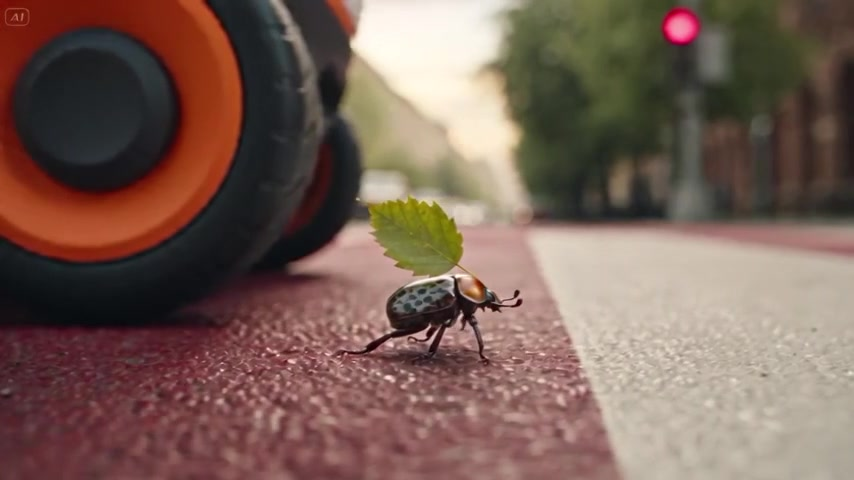

1
Подарок
Ровер забирает подарок, едет через город вместе с потоком и привозит его девочке на день рождения.
Это не финальные ролики, а раскадровка в движении. Я специально не чистил артефакты: сейчас важно понять, в ту ли сторону я иду. Смотрите, пожалуйста, на ритм, героев и настроение, а не на вывески и светофоры.
Этот ролик я бы выбрал основным и довёл до чистовой версии.
Дронов по брифу больше нет, поэтому подарок через весь город везёт ровер-курьер. От упаковки до двери квартиры ровно к моменту, когда на торте горят свечи.

У перехода рядом с колесом ровера стоит жук со своим листом и вместе с ровером ждёт сигнала. Это прямая отсылка к моему аккаунту, где живут такие же маленькие существа.
Он достаточно незаметен, чтобы не перетягивать внимание с истории. Для меня жук - подпись внутри кадра: по таким маленьким существам меня узнают, это и есть мой художественный язык.
Эти ролики я сделал заново: взял то, что вам понравилось в прошлый раз, и учёл новые комментарии. Дронов больше нет, вместо них ровер-курьер. В одном он везёт подарок, в другом лекарство, в третьем время на мгновение замедляется. Если выбирать замену основному ролику, я бы взял «Секунду».
Ровер забирает подарок, едет через город вместе с потоком и привозит его девочке на день рождения.
Та же механика, но ровер везёт лекарство бабушке. Спокойная доставка к нужному часу, без образа скорой.
Вариант с замедлением времени: голуби у фонтана зависают в воздухе, город на мгновение замирает и едет дальше.
Эти косяки я вижу и уберу в чистовой версии. На решение по направлению они не влияют.
Прежде чем двигаться дальше, хочу проговорить с вами четыре вещи.
И любые «нравится», «не нравится» и «хочется больше вот этого» тоже очень помогут. После ваших ответов я доведу основной ролик до чистовой версии.
Этого мы не обсуждали, и это дальше от концепции. Но мне хочется показать и такую возможность: существо в кадре может быть заметно фантастичнее жука.
Здесь одна сцена, а не целая история: девочка смотрит из окна машины на проезжающий город, а существо на светофоре смотрит на неё в ответ. Если такое направление вам интересно, скажите, пожалуйста.